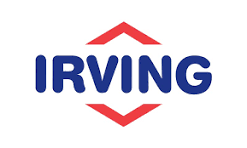
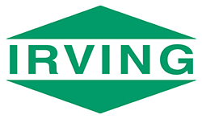
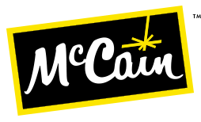

A Case Study in Success
Education to shape industry
Recognizing the importance of teaching and learning opportunities to meet the needs of a variety of markets, UNB launched the Centre for Learning Futures with a mandate of creating transformational learning experiences for learners of all types. UNB is proud to support our learners with their academic pursuits, executive or professional development needs or personal development goals.
We understand that learners have different needs and have a proven track-record of meeting learners where they are. Our programming spans academic, executive, professional development, creative, cultural, and linguistic pursuits. We operate online, in person, hybrid and hyflex, and our learners gain credit and non-credit leaving awards, including microcredentials, certificates, diplomas and degrees.
With this dynamic model, we present a truly customizable experience and produce transformative results. Moreover, we remain nimble and able to respond to the changing needs of industry through flexible and multifaceted educational programming.
Leading the way in work-integrated learning
In 2024, forty UNB students worked with the Port Saint John Employers Association and Canada’s Ocean Supercluster to explore sustainable oceanic economic growth. The students created entrepreneurial concepts, mapped systems and analyzed stakeholder dynamics.
Unforgettable opportunities for growth
The annual Student Pitch Competition was sponsored by Royal Bank of Canada in 2025. Diverse students receive feedback from industry judges on a business proposal, network with professionals, and develop lifelong leadership and communication skills.
-
100,000+ alumni globally
Craig Bell Estabrooks, President and CEO Port Saint John, is one of the 100,000+ UNB alumni making positive change in the global community. Like many other graduates, Estabrooks shares an enduring fondness for the roots set down through a UNB education.
Research to change industry
1. Research Institute in Data Science and Artificial Intelligence (RIDSAI)
Established in 2023, as a result of a $3.5 million investment by donors including Mr. Frank McKenna (former premier of NB and benefactor of UNB’s McKenna Institute), RIDSAI is home to leading UNB experts in the research, application and impact of data science and artificial intelligence.
Dr. Aaloak Jaswal, Director of Innovation RIDSAI, a leader in digital transformation and innovation, has provided technical and policy advice to UN organizations, government counterparts, and relevant partners in the technology and public health sectors. Most recently, he served as Head of Digital Transformation for the UN Economic Commission for Africa (UNECA), where he consistently drove impactful change in complex, global environments.
2. UNB Ocean Mapping Group
Established in 1991, this group is focused on developing new and innovative techniques and tools for the management, processing, visualization and interpretation of ocean mapping data.
UNB’s Ocean Mapping Group are involved in Seabed 2030, a collaboration between GEBCO and Nippon Foundation to map the entire ocean floor by 2030. Valued at over US$18.5 million for the first ten years, Seabed 2030 aims to compile bathymetric data into a high-resolution digital model and promote new data collection efforts.
3. Emera & NB Power Research Centre for Smart Grid Technologies
Established in 2017, with a $6.2 million investment from Emera, this Centre is a global leader in the transformation of electric power systems into smart grids through R&D, innovation, commercial partnerships, high-quality researchers and state-of-the-art research facilities.
Through the Emera & NB Power Research Centre for Smart Grid Technologies, UNB became a founding partner of the Smart Grid Innovation Network (SGIN) alongside Siemens Canada. SGIN fosters the co-creation and testing of cutting edge of smart grid technology.
Deep knowledge, widespread impact:
UNB has specialists working in a variety of areas with direct application to industry. We pride ourselves on finding solutions and creating implementation pathways so that the knowledge we gain through research finds application in the real world.
We have specialists working in:
- labour relations
- organisational behaviour and organizational psychology
- change management
- litigation practice
- employment law
- policy implementation
- optimisation
- generative AI and game-based professional learning
Partnerships to build industry
At UNB, we are proud of our of long-standing strategic partnerships with the province’s largest employers. These close-knit, unique relationships are built upon multi-faceted, mutually beneficial strategic engagement that produces measurable results aligned with partner and university priorities.
We know that working in collaboration helps us build a better future together. As our partners have grown, innovated, and solidified their critical roles in the New Brunswick economy, UNB has been by their side. We leverage our strengths – and the strengths of our partners – in research innovation, talent development, talent retention, and economic capacity building to support this growth.
Our ability to punch above our weight while remaining nimble and responsive to our industry partners’ needs sets UNB apart in the post-secondary market. This is our competitive advantage.




“Through J.D. Irving, Limited’s strategic partnership with UNB, I believe we are well positioned to attract and retain the top talent UNB is producing for our business, as well as the betterment of New Brunswick and the Maritime region as a whole.” – Linda Speedy, Vice-President of Human Resources at J.D. Irving, Limited
.jpg)